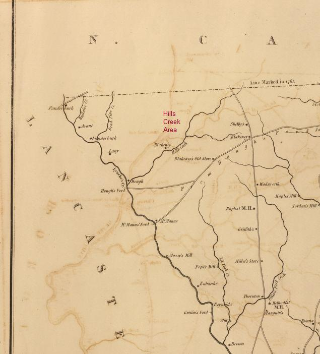
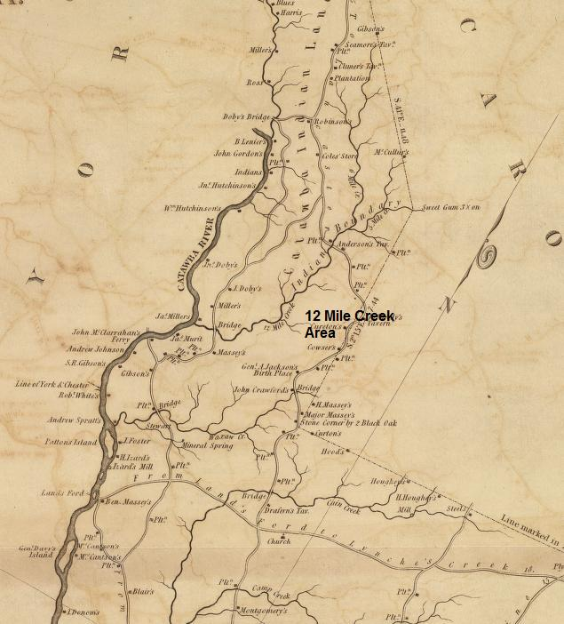

Anderson County
Wills
1798 Will of Henry Terrill. Wife: Sarah Terrill (2nd). Sons:
by first wife: Joel Terrill, Samuel Terrill, Washington Terrill,
William Terrill, John Terrill, Garlant Terrill. By second wife:
Henry Terrill and Patsy Terrill. Land Location: 320 acres on
Wolenoy ... Little Eastitoe and Crow Creek. Exors: my trusty
friends and relations no living in Georgia, Thomas Terrill, Peter
Terrill, David Terrill, Joel Richardson. Witnesses: Robert
Dowdy, Jack Lamb. Date April 1797. Probate: 26 Jan. 1798.
Source: Bk. C p. 124, Rec. 26 Jan. 1798. Anderson Co, SC. (Not
in Probate Court Files).
Anson County NC
(boundary disputes in this timeframe between NC and SC
links this abstract to the Dowdy family in Cheraw SC. It is widely
documented that migrant families poured over the NC border from
Anson into the Cheraw District SC as it opened for settlement)
1789 Chatham
Co NC - Deed Bk. E, pg. 106-107 "This Indenture
made this 4th day of December, 1789, between Thomas Dowdy, Junior of the County of Anson,
NC, planter, of the one
part and Thomas Dowdy Senior of Chatham Co NC, Yoeman,
of the other part. Witnesseth that the said Thomas Dowdy JR for
an in consideration of the sum of 30 pounds to him in hand paid
by the said Thomas Dowdy SR, doth hereby acknowledge. All that
tract or parcel of land (112 acres) lying & being in the
said County of Chatham, on Nicks Creek, it being part of a larger
tract or parcel (212 acres) granted to William Dowdy, deceased,
by a grant bearing date 23 day of September 1785, and registered
in the Registers office in Book D, pg. 328-319, recourse being
thereunto will more fully appear. With the said William Dowdy,
dying without issue, his brother Thomas Dowdy JR, by heirship
became solely entitled to the said land, etc, etc. Witnesses
were Berkley Dowdy and Josiah Rogers.
Proved during November session 1790 by Josiah Rogers."
Cheraw District/Chesterfield County SC
(Chesterfield Co is a "burned" county)
1790 Cheraw District Census
George Dowdy 1-1-1-0-0
Thomas Dowdy 1-0-3-0-0
1798 Chesterfield County formed
from Cheraw District
1798 December 10 - Land Plat for State Land Grant - JOHN LOWRY,
PLAT FOR 1,000 ACRES ON HILLS CREEK, CHESTERFIELD COUNTY, CHERAW
DISTRICT, SURVEYED BY JOHN LOWRY. Names Indexed: JOHN LOWRY,
JAMES CAMMIL, FRANCIS BAKER, JOSIAH HANCOCK, THOMAS DOWDY,
GEORGE DOWDY, F. DUITT, WILLIAM POWE, KORDER GUIN - Locations:
HILLS BRANCH/LYNCHES RIVER/CHESTERFIELD COUNTY/CHERAWS DISTRICT/NORTH
CAROLINA
1799 January 29 - Land Plat for State Land Grant- GEORGE
DOWDY, PLAT FOR 185 ACRES ON BRANCH OF HILLS CREEK, CHESTERFIELD
COUNTY, CHERAW DISTRICT, SURVEYED BY JOHN LOWRY. Names Indexed:
GEORGE DOWDY, JOHN LOWRY, FREDERICK DUET - Locations: LYNCHES
RIVER/CHESTERFIELD COUNTY/CHERAWS DISTRICT/HILLS CREEK
Note: Hills Creek is on the boundary of Lancaster and Chesterfield
counties. It is also just south of the Anson NC (later Mecklinburg
then Union Co) boundary. Lynches River forms the boundary between
the two SC counties.
Mills Map - 1825

1800 Chesterfield District Census
George Dowdy pg 101, 2-2-0-1-0, 3-1-0-1-0
Thomas Dowdy pg 101, 4-1-0-1-0, 1-1-0-1-0
1810 Chesterfield District Census
George Dowdy pg 290, 0-0-0-0-1, 2-2-1-0-1
Thomas Dowdy pg 290, 1-1-3-0-1, 2-1-1-1-0
1812 November 12 Chatham Co NC Deeds - Book T, pg. 64 ...Dated
12 November 1812 Indenture between William Norman of Orange
County and State of North Carolina, Sarah and William Dowdy
of Chesterfield District and State of
South Carolina, of the
one part, and John Ravensby of the County of Chatham... do grant,
bargain and sell and confirm unto the said John Ravensby, a certain
tract or parcel of land on the waters of Mudlick Creek... John
Ravensby's own corner, Joseph Bridges corner, west on William
Dowdy's line, on Thomas Hadlys line.
78 Acres.<s> William Norman, <s> William
Dowdy, <mark> Sarah Dowdy Wit: William Dowdy, Bartly
Dowdy, John Terry.Chatham County, Proven August Session 1813
by the oaths of William Dowdy and John Terry
William Norman's wife is Sarah Dowdy,
but the above Sarah is not his wife, but apparently the wife
of Wm Dowdy (But why isn't Norman's wife also selling as heiress
to the land being sold?) Are there 2 William Dowdys? Can you
witness your own signature, sale of land?
War of 1812 Service
DOWDY JAMES 3 REG'T (RUTLEDGE'S) SOUTH CAROLINA STATE TROOPS.
PRIVATE PRIVATE 60 602
James Dowdy b ca 1790 SC; d 12 Aug 1872 Lauderdale
Co AL m Feb 1813 Chatham Co NC to Catherine Terry. He volunteered
in Chesterfield Dist SC and served as a private in Capt John
McNeill's Co of infantry, Col Rutledge's 3rd Regt, S. Carolina
Militia, from 29 Jun 1812 to 30 Oct 1812. He applied for
bounty land from Lauderdale Co feb 1856 from Lauderdale Co Al,
he received BL Wt 133307-80-55. On 1 Aug 1871 he applied for
a pension from Lauderdale and received cert. no. SC 14468.
His widow applied fro apension on 1 Jul 1876 and received cert.
no. WC 6812. In order to prove her marriage to James Dowdy, her
brother, John Terry of Chatham NC testified that James Dowdy
asked his (and Catherines') father for his siter, then pulled
her up behind him on a sorrel horse and rode off in the direction
of the justice of the peace. They afterwardlived in peace and
hamony as married persons should do.
"I was mustered into service in Jun 1812 at Long Bluff
SC was marched to Headrells Point near Charleston SC and was
there dischargedf for this service. I rec'd two land warrants
of 80 acres each. My PO is Florence Ala." signed James x
Dowdy, 1 Aug 1871. Attest: John Cooper and Chapman Sego.
[ed note: Chapman Sego's mother was Margaret
Dowdy, daughter of George Dowdy of SC- see Chatham NC abstract
pages at this website]
DOWDY JEREMIAH 3 REG'T (ALSTON'S) SOUTH CAROLINA MILITIA.
PRIVATE PRIVATE 60 602
DOWDY THOMAS 3 REG'T (ALSTON'S) SOUTH CAROLINA MILITIA. PRIVATE
PRIVATE 60 602
Thomas Dowdy b ?; d 28 Jul 1841, Lauderdale co Al;
m 24 March 1823, Lauderdale Co AL to Margaret Brown. He served
as a private in Capt Willima Welch's Co, Maj Field's 39th Regt,
So Carolina Militia from 24 Sep 1814 to 12 Mar 1815. The widow
applied for bounty land on 21 Jan 1851 in Lauderdale AL and received
BL wt 21916-80-50. She applied for additional bounty land on
19 Jul 1855 and received BL Wt 42233-80-55. On 6 Nov 1878 she
applied for a pension in Lauderdale AL and received WC 24238.
1813 August 24 - Land Plat for State Land Grant - SALVA D.
POER, PLAT FOR 1,000 ACRES ON HILLS AND LANES CREEKS, CHESTERFIELD
DISTRICT, SURVEYED BY JOHN LOWRY. - Names Indexed:SALVA D POER,
JOHN LOWRY, JAMES BLAKENEY, CAD LUCY, HILTON, HUFF, JACOB FUNDERBURK,
THOMAS BLAKENEY, GEORGE DOWDY, LOVICK YOUNG - Locations:
HILLS BRANCH/LANES BRANCH/CHESTERFIELD DISTRICT/NORTH CAROLINA
1820 Chesterfield Co Census
George Dowdy pg122, 0-0-0-0-0-1, 0-0-3-0-1
William Dowdy pg 122, 1-0-0-0-1-0, 3-0-0-1-0
Ann Dawdy pg 122, 0-0-0-0-1-0, 0-1-1-0-1 (appears to
be widow of Thomas)
Lancaster County SC
1795 Dec 5 Lancaster Co SC DB B pp 313-314. Thomas Warr and
wife Agness of Lancaster for L50 to Thomas Lant Hall and
William Dowdy of same land on waters of 12 Mile Creek
132 ac wit: Wike Ivey, Robert Ivey, Richard Woodroof. Proven
4 June 1796
1797 Nov 6 Lancaster Co SC DB B p334. Alex Carnes of Montgomery
Co TN to Benjamin Harper (prior sentence stricken through), Thomas
Lant Hall, William Dowdy and Rebecca Dowdy of Lancaster
Co to Alex Carnes of the State of NC land on the Mill Stone
Branch waters of 12 Mile Creek 132 ac <s> Thomas
Lt Hall, William Dowdy, Rebecca Dowdy. wit: Wike Ivey,
Jas Sprayberry, John Carnes. Proven 21 Apr 1798.
Note: Alexander Carnes appears in 1798
tax list of Montgomery Co TN (supposedly he died in Mecklinburg
NC?)
Dec 10 1799. Warren Co GA DB
A pg 582 - Dated 20 September 1799 - Thomas LT. Hall of Warren
County GA for love and affection to daughter Rebecca Dowdy
of Lancaster SC a negro wench Phillis (age 43), a boy named
Cezr (age 18), the son of the sd Phillis and one other boy named
David (age 11) son of sd Phillis, also a girl named Sarah (age
9), daughter of sd Phillis, also gilr named Enney (age 2) daughter
of Phillis. Also my own lodging feather bed and furniture, girl
and others. <s> Thos Lt Hall; Wit: T. Persons, Abner.
Llewellin.
Warren Co GA - Will of Thomas
Lent Hall signed Nov 13, 1799 proven Nov 23, 1799 Wife: Lydia
all HH furniture that I may not have already given to my daughter
Rebecca Dowdy. Wit: T. Persons, Abn. Llewellin. Exr: Richard
Brooks Fletcher Wit: Daniel Sanders, Mary Wilkins.
1800 Lancaster Census
William Dowdy (could be Dorody) 1-0-0-1-0; 2-0-0-1-0
(age 26-45, born 1765-74)
1825 Mills Map

SOUTH CAROLINA CENSUS
1790 Cheraw District
George Dowdy 1-1-1-0-0
Thomas Dowdy 1-0-3-0-0
1800 Lancaster
William Dowdy (could be Dorody) 1-0-0-1-0; 2-0-0-1-0
(age 26-45, born 1765-74; He is the correct age to be Wm Dowdy
of Stewart Co TN, 3 children born in SC)
Chesterfield
1800 Census
George Dowdy pg 101, 2-2-0-1-0, 3-1-0-1-0
Thomas Dowdy pg 101, 4-1-0-1-0, 1-1-0-1-0
1810 Census
George Dowdy pg 290, 0-0-0-0-1, 2-2-1-0-1
Thomas Dowdy pg 290, 1-1-3-0-1, 2-1-1-1-0
1820 Census
George Dowdy pg122, 0-0-0-0-1-0, 0-2-0-1-1
William Dowdy pg 122, 1-0-0-0-1-0, 3-0-0-1-0
Ann Dawdy pg 122, 0-0-0-0-1-0, 0-1-1-0-1
Dowdys in Other States Born in SC
1850 STEWART CO TN CENSUS
William Dowdy, age 47 b: SC (note: son of William Dowdy)
Marinda 26 TN
Lochey (f) 25 TN
Louisa 20 TN
Cullen 7 TN
Wm. PARCHMENT age 2. TN
James Dowdy age 54 b: SC. (note: son of William Dowdy)
Martha 40 b: NC
Arthur age 6 mos b:TN
1850 LAUDERDALE AL CENSUS
James Dowdy 61 SC
Catherine 58 NC
Catherine 2nd 28 AL
Lavinia 16 AL
Jerrymiah 22 AL
John 19 AL
Martha 14 AL
1850 CHICKASAW MS CENSUS
JOHN DOWDY 49 SC Farmer
Francis 45 SC
Thomas J 22 AL
Francis P 17 NC
James C 20 AL
Sarah A 18 AL
Mary E. 16 AL
William B 12 AL
Elender (f) 10 AL
Martha 5 AL
Duvell (m) 7/12 MS
1850 AMELIA VA CENSUS
42A Dowdy John A. 48 SC
pg0036a.txt
42A Dowdy Mary A. 39 VA pg0036a.txt
42A Dowdy Martha A. 20 VA pg0036a.txt
42A Dowdy Robt M. 18 VA pg0036a.txt
42A Dowdy John E. 15 VA pg0036a.txt
42A Dowdy Richd J. 13 VA pg0036a.txt
42A Dowdy H. H. 10 VA pg0036a.txt
42A Dowdy Mary V. 8 VA pg0036a.txt
42A Dowdy Lucy F. 5 VA pg0036a.txt
1860 CHATHAM NC CENSUS
William Dowdy 68 SC (b 1792)
Sarah 70 SC
Hannah 40 SC (b 1820)
Matilda 38 SC (b 1822)
Martha 36 SC (b 1824)
John 35 SC (b 1825)
1850 Jackson Parish Louisiana Census
William Dowdy age 33 farmer b SC;
Eliza J age 26 b TN;
Jas G age 10 b AL;
Wm C or O age 7 b AL;
Mary age 5 b LA;
Franklin age 3 b LA;
Alpha (f) age 1 LA
Theoretical
SC Dowdy Family Group Sheets
GEORGE DOWDY OF CHESTERFIELD SC
Supposedly this person is George Dowdy b. 1764 in Albemarle Parish,
Sussex VA. According to one posted lineage, his wife's surname
is Whithead. All Dowdys are gone in the SC 1830 census.
| 1790 Census |
1800 Census |
1810 Census |
1820 Census |
Comments |
George Dowdy
b. bef 1774 |
b. 1755 - 1774 |
b. bef 1765 |
b. bef 1775 |
|
| Female (wife) no age |
b. 1755 - 1774 |
b. bef 1765 |
b. bef 1775 |
_____Whitehead |
| Male b 1774-1790 |
b. 1784 - 1790 |
Gone |
Gone |
Age 26? in 1810 |
| Male (not in 1790?) |
b. 1784 - 1790 |
Gone |
Gone |
Age 25? in 1810 |
| Female (not in 1790) |
b. 1784 - 1790 |
b. 1784 - 1794 |
Gone |
Margaret Sego |
| Male (not in 1790) |
b. 1790 - 1800 |
Gone |
Gone |
Age 20? in 1810 |
| Male (not in 1790) |
b. 1790 - 1800 |
Gone |
Gone |
Age 19? in 1810 |
| Female (not in 1790) |
b. 1790 - 1800 |
b. 1784 - 1794 |
Gone |
unknown |
| Female (not in 1790) |
b. 1790 - 1800 |
b. 1800 - 1810 |
b. 1794 - 1804 |
unknown b. 1800? |
| Female (not in 1790) |
b. 1790 - 1800 |
b. 1800 - 1810 |
b. 1794 - 1804 |
unknown b. 1800? |
| Female |
|
b. 1800 - 1810 |
b. 1794 - 1804 |
unknown |
1. A George Dowdy shows up in land records in early Lauderdale
Co AL
2. Margaret Dowdy was born Dec 27, 1790 in Chesterfield SC. She
married John Sego about 1810 (ch b. 1811). Family tradition states
whe was the daughter of George Dowdy. She died Aug 1870 in Lauderdale
AL. The Mormon IGI lists her as a relative of Amanda E. S. Smith.
3. Another daughter is likely Mahala Dowdy of Lauderdale AL (age
?). She married Kinchen Dorris in Lauderdale 1827. He appears
to have abandoned her and left for TN. She lived near a George
Dowdy in very early land records in Lauderdale.
THOMAS DOWDY OF CHERAW/CHESTERFIELD CO SC
The website editor believes this Thomas is the same person
born 1759 in Albemarle Parish , Sussex VA (contrary to traditional
thinking that Thomas (b 1759) was in Chatham NC)
| 1790 Census |
1800 Census |
1810 Census |
1820 Census |
Comments |
Thomas Dowdy
b. bef 1774 |
b. 1755 - 1774 |
b. bef 1765 |
Gone |
|
| Female no age (wife) |
b. 1755 - 1774 |
b. 1765 - 1784 |
Ann Dawdy ?
b. bef 1785 |
|
| Female no age |
gone |
gone |
gone |
unknown |
| Female no age |
gone |
gone |
gone |
unknown |
| Female no age |
b. 1784 -1790 |
b. 1784 - 1794 |
gone |
unknown |
| Male (not in 1790?) |
b. 1784 - 1790 |
b. 1784 - 1794 |
gone |
?James b. 1790 |
| Male |
b. 1790 - 1800 |
b. 1784 - 1794 |
gone |
?William in 1820 |
| Male |
b. 1790 - 1800 |
b. 1784 - 1794 |
b. 1775 - 1794 |
?Jerrimiah (war) |
| Female |
b. 1790 - 1800 |
b. 1794 - 1800 |
gone |
unknown |
| Male |
b. 1790 - 1800 |
b. 1794 - 1800 |
gone |
?David b. 1799 |
| Male |
b. 1790 - 1800 |
b. 1800 - 1810 |
gone |
?Thomas b.~1800 |
| Female |
|
b. 1800 - 1810 |
b. 1794 - 1804 |
unknown |
| Female |
|
b. 1800 -1810 |
b. 1804 - 1810 |
unknown |
1. Thomas' family is gone in 1830 census from SC. The SC Dowdys
simultaneously show up in Lauderdale AL.
2. These Lauderdale families have been assigned to Thomas
rather than George because George's boys are all gone in 1810
and the Lauderdale folks don't seem to move to Alabama until
about 1820. Therefore, they would still need to be in father's
household. David and Thomas would be too young to be on their
own in 1810.
3. A Jerrimiah has been assigned to this family because he
shows up in 1812 muster rolls for SC. James had a son named Jerrimiah
named after his ?brother. Both James and Thomas (Jr) were in
the War of 1812 (family thing)
4. James Dowdy strongly appears to be the person living in the
Rocky River area (connection to the Albemarle Parish clan) of
Chatham NC in 1820 census where he married Catherine Terry. This
is another link for his ?father Thomas being of Albemarle Parish
b. 1759
|

 South
Carolina
South
Carolina